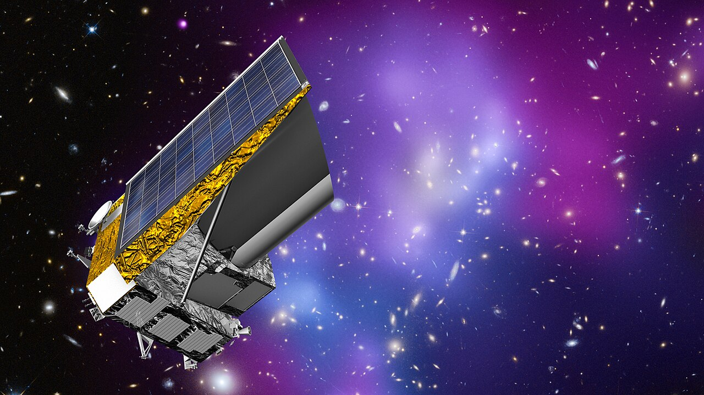
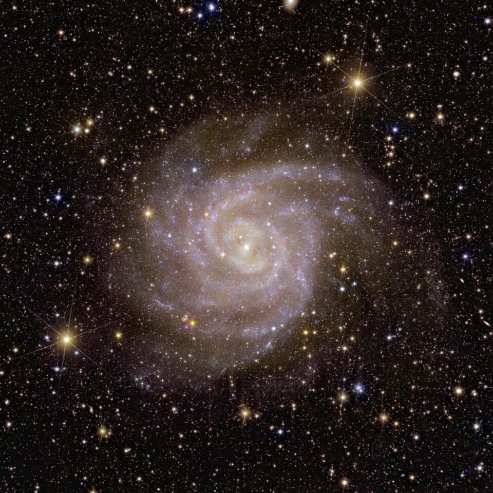

Executive Summary
중국과학원 국가천문대와 국가천문데이터센터의 연구자 다섯 사람이 2026년 9월 26일 arXiv에 논문 한 편을 올렸다. 유럽우주국의 유클리드 우주망원경이 찍은 은하 사진 365,513장을 모두 같은 화소 크기로 바꾸고, 사진 한 장마다 384개의 숫자로 된 특징값을 미리 계산해 함께 공개한 작업이다. 논문 제목에는 'AI-Ready', 곧 AI가 바로 쓸 수 있는 상태라는 말이 붙어 있다. 이 글은 그 말이 실제로 무엇을 미리 정해 두는 일인지를 본다.
가장 눈에 띄는 수치는 1,681이다. 그렇게 준비한 자료에 이상 탐지를 돌려 추려 낸 후보의 개수다. 그런데 논문이 그 후보들을 그림으로 펼쳐 보인 자리에는 미지의 천체가 거의 없다. 아무것도 찍히지 않은 빈 화면, 가장자리에서 잘려 나간 사진, 밝은 별빛이 십자로 번진 자국, 서로 겹쳐 찍힌 은하가 대부분이다. 저자들도 이 결과가 데이터 품질 관리에 즉각적인 가치를 보여 줄 뿐 천체물리학적 이상현상을 확증하는 것은 아니라고 못 박았다.
1절부터 4절까지는 논문에 적힌 내용이다. 5절은 그 사실을 데이터 품질의 눈으로 다시 읽은 이 글의 해석이다.
주요 수치
출처: Xie, Xu, Zhang, Chen, Cui, "Making Euclid VIS Imaging AI-Ready" (arXiv:2609.32753, 2026년 9월 26일).
365,513장
같은 규격으로 바꾼 은하 사진
1차 생산에 48시간이 걸렸다. 저자들이 기록한 운영 추정치다
384차원
사진마다 미리 뽑아 둔 특징값
분류든 검색이든 이상 탐지든 같은 값을 다시 쓴다
1,681개
추려 낸 이상 후보
논문이 보여 준 표본은 대부분 빈 화면·별빛 번짐 같은 촬영 불량이다
0.484
나선은하 분류 점수
무조건 다수 쪽으로만 답하는 기준선 0.492보다 낮다
이틀 만에 36만 장, 같은 규격으로
유클리드는 유럽우주국이 2023년에 쏘아 올린 우주망원경이다. 우주의 팽창과 암흑물질 분포를 측정하기 위해 하늘을 넓게 훑으며 은하를 찍는데, 그 가시광 카메라가 남긴 사진은 이미 한 사람이 눈으로 볼 수 있는 양을 한참 넘어섰다. 이번 논문이 다룬 자료는 유클리드의 첫 공개분인 Quick Data Release 1과, 자원봉사자들의 분류를 바탕으로 만든 Galaxy Zoo Euclid 형태 목록이다. 뒤쪽 목록에 오른 고유 천체는 380,111개다.

목록에 적힌 형태 값은 사람이 은하마다 손으로 써 넣은 것이 아니다. 자원봉사자들이 남긴 응답으로 학습한 Zoobot 모델이 은하마다 내놓은 확률이고, 이 논문이 정답으로 쓴 것은 그 확률 가운데 확신이 높은 쪽만 문턱으로 걸러 낸 부분집합이다.
연구진이 공개한 것은 그 가운데 365,513줄이다. 천체 번호가 겹친 9줄을 걷어 내면 목록과 맞물리는 천체는 365,504개가 된다. 사진마다 128×128 화소짜리 원본 조각을 받아 224×224로 바꾸고, 같은 사진에서 뽑은 384개의 숫자를 나란히 붙였다. 자료는 국가천문데이터센터에서 내려받을 수 있고, 처리 코드는 MIT 라이선스로 공개했다.

이 일을 맡은 것은 국가천문데이터센터 안에 올려 둔 컷아웃 서비스다. 요청을 묶어 여러 워커에 나눠 주고, 좌표와 조각 크기와 관측 기기와 파일 형식과 파장대를 열쇠로 삼아 결과를 저장해 둔다. 같은 요청이 다시 들어오면 계산하지 않고 저장해 둔 것을 내준다. 반복 요청이 잦은 자료일수록 이 구조가 값을 한다.
1차 생산은 약 48시간에 끝났다. 초당 2.12장, 시간당 7,615장꼴이다. 다만 이 속도를 정밀 측정값으로 읽으면 논문보다 앞서 나간 것이 된다. 저자들은 이 수치가 타임스탬프를 모두 남긴 벤치마크가 아니라 자신들이 기록한 운영 추정치라고 본문에 적어 두었다. 이 글이 인용하는 숫자 가운데 성격이 다른 하나가 이것이다.
'AI-Ready'는 무엇을 미리 정해 두는가
논문에서 이 말을 정의하는 자리는 딱 한 곳, 첫 그림의 설명문이다. 거기에 적힌 AI-Ready는 두 가지를 가리킨다. 하나는 표준화된 사진 조각이고, 다른 하나는 여러 분석이 함께 쓸 수 있는 재사용 가능한 특징값이다. 저자들은 본문에서 한 번 더 선을 긋는다. "우리는 'AI-ready'를 이런 운영·공학적 의미로 쓰며, 하나의 표현이 모든 과학적 추론에 충분하다는 주장으로 쓰지 않는다."
첫 번째로 정해 둔 것은 화소 규격이다. 원본 조각을 32비트 실수로 읽고, 값이 비어 있는 화소를 걷어 내고, 밝기 분포의 아래위 1%를 잘라 낸 다음 0과 1 사이로 눌러 편다. 그리고 128화소를 224화소로 늘린 뒤 흑백 한 장을 세 겹으로 복제한다. 사진마다 제각각이던 밝기 범위와 크기가 이 단계에서 하나로 모인다.
두 번째는 특징 공간이다. 연구진은 메타가 공개한 범용 시각 모델 DINOv2의 작은 모델(ViT-S/14)을 가져와 가중치를 얼린 채로 썼다. 천문 사진으로 다시 학습시키지 않았다. 웹 이미지 1억 4,200만 장으로 배운 모델이 은하 사진을 보고 내놓는 384개의 숫자를, 그대로 이 자료의 공용 좌표로 삼은 것이다. 이후의 모든 분석은 사진을 다시 열지 않고 이 숫자만 읽는다.
그래서 무엇이 달라지는가. 같은 원본을 놓고 연구자마다 자르는 크기를 정하고 밝기를 맞추고 특징을 뽑는 일이 사라진다. 한 번 뽑아 둔 384개의 숫자 위에서 분류도 하고 검색도 하고 이상 탐지도 한다. 논문이 스스로 자기 몫을 좁게 잡은 대목도 여기다. 형태 분류나 유사도 검색이나 이상 탐지에 대해 우선권을 주장하지 않으며, 자신들의 기여는 독립적으로 공개된 공학적 경로라고 적었다.
그 384개의 숫자가 무엇을 담고 있는지는 회귀로 확인했다. 임베딩만 가지고 기존 목록의 측정값을 얼마나 되살릴 수 있는지 본 것인데, 결과는 항목마다 갈렸다. 은하가 얼마나 찌그러졌는지를 나타내는 이심률은 결정계수 0.596으로 비교적 잘 되살아났고, 표면밝기는 0.511이었다. 반면 은하의 크기를 나타내는 크론 반경은 0.377로 네 항목 가운데 가장 낮았다. 남은 한 항목은 표면밝기에서 전체 밝기를 뺀 값으로 0.390이었다. 특징값 안에 카탈로그 정보가 어느 정도 선형으로 남아 있기는 하지만, 모든 물리량이 고르게 남아 있지는 않다는 뜻이다.
스스로 몫을 좁게 잡은 이유는 주변을 보면 드러난다. 같은 유클리드 자료 위에는 광학과 적외선과 분광을 함께 쓰는 멀티모달 파운데이션 모델 AstroPT가 약 30만 장 규모로 이미 올라와 있다. 이 논문이 라벨로 가져다 쓴 상세 형태 목록도 Zoobot을 돌려 만든 별개의 연구다. 다른 서베이에서는 AION-1이 DINOv2의 큰 모델을 얼린 채로 Galaxy Zoo 10 형태 분류를 71.4% 정확도로 맞혔다. 그런데 논문은 이 수치를 자기 점수 옆에 놓지 않았다. 서베이가 다르고 과제가 달라 견줄 수 없다고 적었다.
이상 후보 1,681개를 열어 보면
이상 후보를 고르는 방법은 두 단계다. 먼저 384차원 원본 좌표에서 이웃 100개를 보는 국소 이상값 인자로 점수를 매겨 유별난 것을 뽑는다. 다음으로 같은 자료를 2차원으로 눌러 편 지도 위에서 중심으로부터 멀리 떨어진 상위 2%를 뽑는다. 두 목록에 모두 든 천체가 1,681개다. 공개된 365,513장의 0.46%다.
후보의 정체는 논문이 열여덟 장을 펼쳐 보인 자리에서 드러난다. 첫째는 아무것도 없는 빈 화면과 가장자리에서 잘려 나간 조각이다. 관측 영역의 경계에 걸렸거나 자료를 모으는 과정에서 생긴 결함이다. 둘째는 앞쪽에 놓인 밝은 별이 만든 회절 무늬와 포화된 화소다. 셋째는 두 은하가 겹쳐 찍힌 사진이고, 넷째는 신호가 약해 잡음이 화면을 지배하는 사진이다.
저자들의 문장은 이 지점에서 가장 분명하다. 이 예시들은 데이터 품질 관리에 즉각적인 가치를 보여 주지만, 천체물리학적 이상현상을 확증하는 것은 아니라고 적었다. 이상 탐지가 처음 건져 올린 것은 우주가 아니라 촬영과 자료 처리가 남긴 흠이었다.
목록의 성격에도 단서가 붙었다. 이 1,681개는 이웃의 개수, 오염 비율, 원본 좌표의 척도, 2차원 투영의 설정값, 전역 거리 통계에 따라 달라지는 구성 의존적 목록이다. 설정을 바꾸면 명단이 바뀐다는 뜻이다. 논문은 재현 가능한 이상현상 발생 빈도를 추정하지 않는다고도 밝혔다. 이 숫자는 하늘에 이상한 천체가 몇 개 있는지를 세어 놓은 값이 아니다.
네 번째 활용인 닮은 은하 검색에도 같은 태도가 보인다. 코사인 유사도로 후보 300개를 추린 뒤 라벨과 물리량과 이미지 품질에 손으로 정한 가중치를 얹어 상위 4개를 돌려주는 방식인데, 저자들은 이를 정성적 시연이라고 부르고 결합 점수를 보정된 확률로 읽지 말라고 덧붙였다. 질의당 4개씩 네 과제만 확인한 규모라 일반적으로 좋은 가중치를 고를 근거는 되지 못한다는 설명도 함께 달렸다.
나선은하 앞에서는 표준화가 멈춘다
준비해 둔 특징값이 실제로 쓸 만한지는 라벨을 아껴 가며 분류해 보면 드러난다. 연구진은 전체 라벨의 1%만 써서 간단한 분류기를 얹고 네 가지 형태 문제를 풀게 했다. 매끈한 은하와 구조가 보이는 은하를 가르는 문제, 옆으로 누운 은하를 가려내는 문제, 둥근 모양과 길쭉한 모양을 가르는 문제, 그리고 나선팔이 있는지 판정하는 문제다.

앞의 세 문제는 라벨 1%만으로 0.80에서 0.86 사이의 점수를 냈다. 준비된 정답 백 장 가운데 한 장만 보고도 쓸 만한 판정을 한다는 뜻이다. 네 번째 문제는 그렇지 않았다. 나선팔 판정 점수는 0.484로, 아무것도 보지 않고 무조건 다수 쪽으로만 답했을 때의 0.492보다도 낮다.
라벨을 아껴서 생긴 문제라면 라벨을 늘리면 풀려야 한다. 그런데 정답을 100% 다 주어도 나선팔 판정은 0.496에 머물렀다. 같은 조건에서 나머지 세 문제는 0.90에서 0.95까지 올라간다. 논문은 이 실험이 지금의 불균형한 고신뢰 라벨 계약 아래에서는 쓸 만한 판별력을 확립하지 못한다고 결론지었다. 나선팔이 있다고 확신을 가지고 표시된 은하가 너무 적어, 한쪽으로 크게 기운 문제가 된 탓이다.
쏠림의 출처는 정답을 만든 방식에 있다. 이 실험이 정답으로 쓴 값은 Zoobot이 내놓은 확률 가운데 확신이 높은 쪽만 남긴 것이고, 나선팔은 그 문턱을 넘은 은하가 유독 드문 항목이다. 정답을 100% 다 준다는 말도 문턱 밖에 남은 애매한 은하까지 데려온다는 뜻은 아니었다. 그러니 이 표가 말하는 것은 나선팔을 기계가 못 본다는 사실이 아니라, 지금 쓸 수 있는 정답의 모양이 그 질문을 받쳐 주지 못한다는 사실이다.
이 대목이 논문의 신뢰도를 깎는다고 보기는 어렵다. 오히려 반대다. 같은 자료, 같은 특징값, 같은 분류기를 쓰고도 어떤 문제는 정답의 1%로 풀리고 어떤 문제는 정답을 전부 주어도 풀리지 않는다는 것을 저자들이 숫자로 갈라 보여 주었다. 표준화가 보장하는 범위와 보장하지 못하는 범위가 한 표 안에 나란히 있다.
페블러스가 이 연구를 주목하는 이유
여기서부터는 같은 숫자를 우리 일터 쪽에서 읽어 본다.
'AI-Ready'는 업계에서 흔히 쓰이면서도 정의가 사람마다 다른 말이다. 이 논문은 그 말을 천문학 자료 위에서 아주 좁게 못 박았다. 화소 규격 하나, 특징 공간 하나. 그 둘을 고정하는 대신 풀리는 문제의 목록은 약속하지 않았다. 이것을 능력에 대한 약속이 아니라 재료에 대한 계약으로 읽으면 이해가 빨라진다. 같은 재료를 두 번 썰지 않아도 되게 규격을 맞춰 두는 일과, 그 재료로 어떤 요리가 되는지는 서로 다른 질문이다.
조직에서 이 구분이 흐려지면 비용이 어디서 나는지 보이지 않는다. 데이터를 정리해 두었으니 모델이 잘 돌 것이라는 기대와, 정리해 둔 덕분에 같은 작업을 다시 하지 않아도 된다는 사실은 크기가 다르다. 뒤쪽은 대개 확실하게 회수되고, 앞쪽은 문제마다 갈린다. 이 논문은 그 갈림을 네 문제의 점수로 드러냈다. 세 문제는 정답의 1%만으로 풀리고, 한 문제는 정답을 전부 주어도 풀리지 않는다.
이상 후보 1,681개가 품질 불량 목록이었다는 대목도 실패담으로 읽히지 않는다. 데이터를 처음 한자리에 모아 같은 잣대로 재면 가장 먼저 튀어나오는 것은 대개 결측과 잘림과 잡음이다. 페블러스가 데이터 품질 진단 현장에서 반복해 보는 장면이 이것이다. 이상값을 찾아 달라는 요청을 받아 돌려 드리는 첫 목록이 새로운 발견인 경우는 드물다. 대개는 수집 과정에서 생긴 흠이다. 그 목록을 치우기 전에는 그다음 질문으로 넘어갈 수 없다. 이 논문이 이상 탐지 결과를 품질 관리 쪽으로 정직하게 돌려세운 것은 그래서 자연스럽다.
덧붙여 둘 만한 것은 저자들의 태도다. 속도는 자신들이 기록한 운영 추정치일 뿐이라고 밝혔고, 이상 후보 목록은 설정에 따라 달라진다고 적었고, 검색 결과는 정성적 시연이라고 썼고, 나선팔 문제는 풀리지 않았다고 결론에 남겼다. 자료를 공개하는 연구가 자기가 보장하는 범위를 이렇게 촘촘히 그으면, 그 자료를 받아 쓰는 쪽은 무엇을 더 확인해야 하는지 알고 시작할 수 있다. 데이터 품질에서 가장 비싼 손실은 틀린 값이 아니라, 어디까지 믿어도 되는지 적혀 있지 않은 값이다.
여기까지 읽어 주셔서 감사하다. 논문 원문과 공개된 자료는 arXiv와 국가천문데이터센터에서 볼 수 있다. 여러분의 조직에서 'AI가 바로 쓸 수 있게 준비했다'고 말할 때 실제로 고정된 것이 무엇인지, 그 목록을 한번 적어 보시고 무엇이 빠져 있었는지 들려주시면 좋겠다.
참고문헌
R.1학술 논문
- 1.Xie, J., Xu, Y., Zhang, Z., Chen, L., & Cui, C. (2026). "Making Euclid VIS Imaging AI-Ready: A Scalable Pipeline for Morphology, Anomaly Detection, and Similarity Search." arXiv:2609.32753. 이 글의 수치와 인용은 따로 밝히지 않는 한 모두 여기서 왔다. 처리 규격, 회귀 결과, 라벨 1% 분류 점수, 이상 후보 선별 방법과 그 한계, 유사도 검색 설명이 모두 여기에 있다.
- 2.Oquab, M., et al. (2023). "DINOv2: Learning Robust Visual Features without Supervision." arXiv:2304.07193. 위 논문이 가중치를 얼린 채 그대로 가져다 쓴 범용 시각 모델이다.
- 3.Euclid Collaboration: Walmsley, M., et al. (2025). Galaxy Zoo Euclid 상세 형태 목록(Q1, 약 37.8만 개 천체). 자원봉사자 응답을 바탕으로 만든 이 목록이 위 논문이 쓴 고신뢰 라벨의 원천이다. 이 글은 위 논문의 서술을 통해 참조했다.
- 4.Parker, L., et al. (2025). AION-1. 다른 서베이 자료에 DINOv2 계열 인코더를 얹은 선행 연구로, Galaxy Zoo 10 형태 분류에서 정확도 71.4%를 보고했다. 서베이와 과제가 달라 직접 비교 대상이 아니라고 위 논문이 밝혔고, 이 글은 그 서술을 통해 참조했다.
- 5.Euclid Collaboration: Siudek, M., et al. (2025). AstroPT. 같은 유클리드 자료 위에 광학·적외선·분광을 함께 쓰는 멀티모달 파운데이션 모델을 약 30만 장 규모로 올린 연구다. 위 논문이 자기 자리를 좁게 잡을 때 옆에 놓은 선행 연구이며, 이 글은 그 서술을 통해 참조했다.
R.2공개 자료·코드
- 6.국가천문데이터센터(NADC). (2026). 유클리드 VIS 컷아웃·임베딩 공개 자료. 224×224 화소 조각 365,513장과 384차원 특징값을 내려받을 수 있는 자리다.
- 7.Xie, J. (2026). "Making-Euclid-VIS-Imaging-AI-Ready," v1.1.0, MIT License. Zenodo DOI 10.5281/zenodo.21629100. 처리 코드와 재현 절차가 담겨 있다.